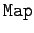
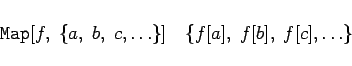
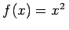
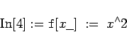
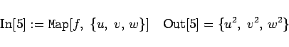
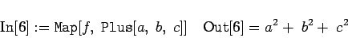

Die Operation  führt, bei entsprechend definierter Funktion f, zu dem Ergebnis
|  | (20.25) |
erstellt eine neue Liste, deren Elemente durch die Anwendung der Funktion f auf die Elemente der Ausgangsliste entstehen.
| Beispiel |
|
Es sei f die Funktion . Sie wird durch 


|